AI-тренажёр для подготовки
к техническим собеседованиям
Веб-сервис, в котором пользователь вставляет текст вакансии, AI задаёт по ней 8 вопросов и оценивает каждый ответ. Платные подписки оплачиваются через ЮKassa, развёрнут на prepstats.pro.
О проекте
Сервис для подготовки к собеседованиям. Пользователь проходит интервью по тексту вакансии, получает разбор каждого ответа и видит, как меняются его результаты от попытки к попытке. Там же можно повторять вопросы на флэш-карточках и собрать резюме с помощью AI. Бесплатного тарифа хватает на одно интервью в день, платные тарифы поднимают дневные лимиты.
01 · Интервью
8 вопросов по тексту вакансии
Пользователь вставляет описание вакансии или выбирает его из истории и задаёт уровень — Junior, Middle или Pro. AI составляет технические, поведенческие и ситуационные вопросы под эту вакансию. Ответы пишутся по одному, каждый сразу уходит на оценку; незаконченное интервью можно продолжить позже.
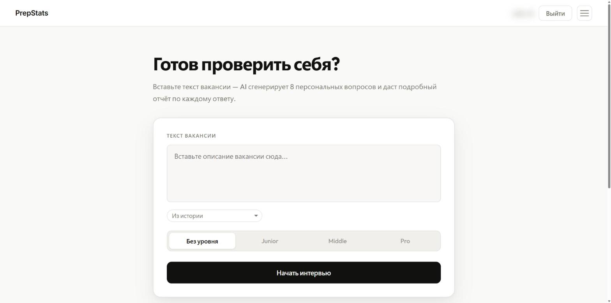
Запуск: текст вакансии и уровень
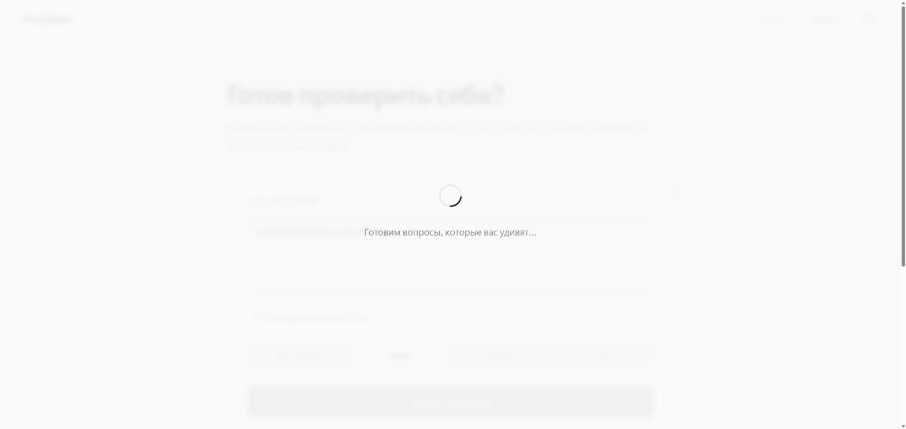
AI готовит вопросы
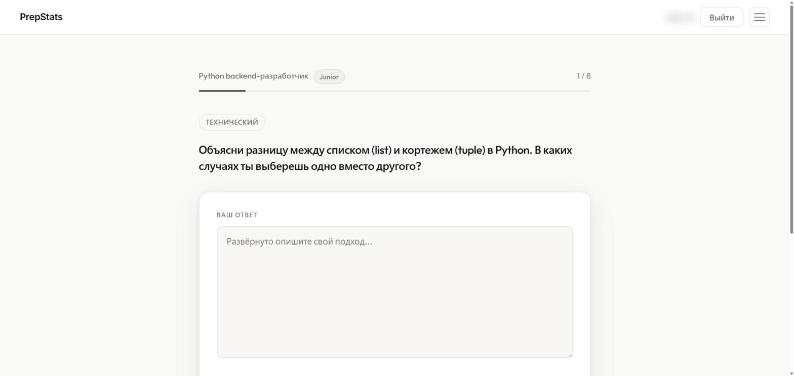
Вопрос интервью
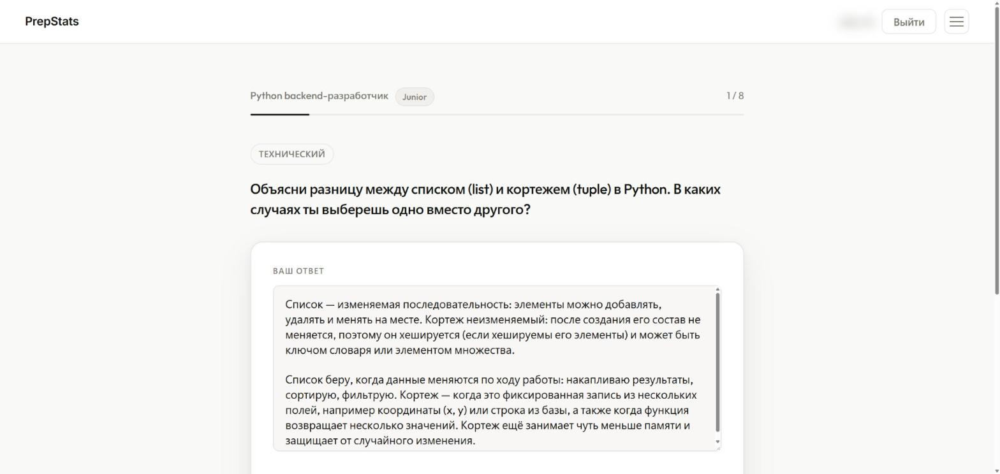
Ответ на вопрос
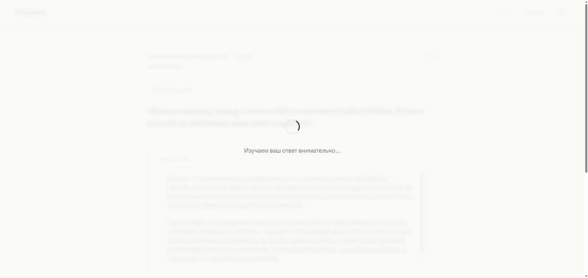
AI оценивает ответ
02 · Отчёт
Разбор каждого ответа
После интервью пользователь получает общий балл и разбор по каждому вопросу: оценку от 1 до 10, сильные стороны, что улучшить и подсказку к идеальному ответу. Все пройденные интервью остаются в истории, к любому отчёту можно вернуться.
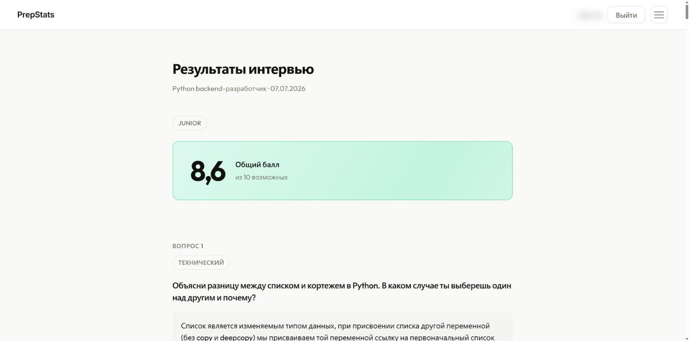
Итоговый отчёт с общим баллом
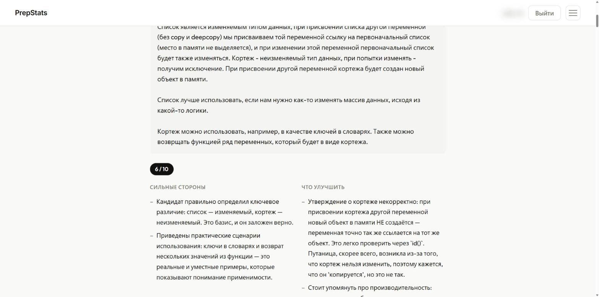
Сильные стороны и что улучшить
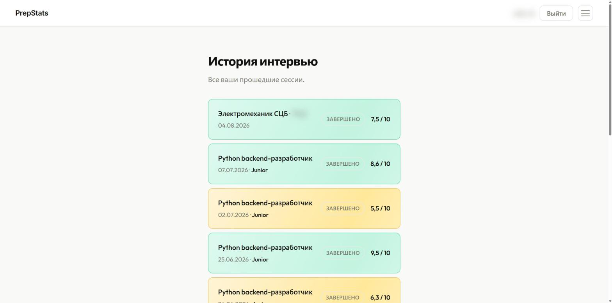
История интервью
03 · Статистика
Менторство от AI
Интервью по одной вакансии складываются в статистику: средний балл, тренд и повторяющиеся слабые места. На странице вакансии — график баллов по попыткам и анализ от AI: общий прогресс, хронические проблемы, что стало лучше и что подтянуть дальше.
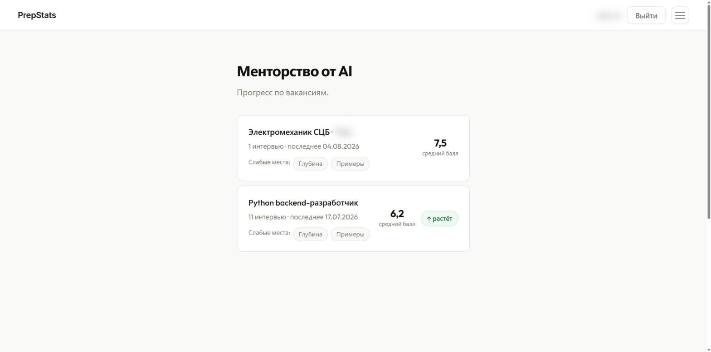
Прогресс по вакансиям
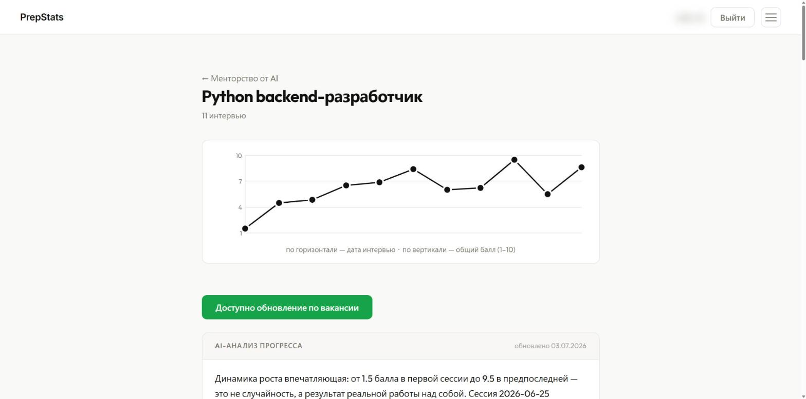
График баллов и AI-анализ прогресса
04 · Флэш-карточки
Повторение пройденных вопросов
Вопросы из завершённых интервью превращаются в карточки для тренировки. Их можно отфильтровать по типу вопроса, уровню и слабому месту или оставить только те, на которые ответ был слабым.
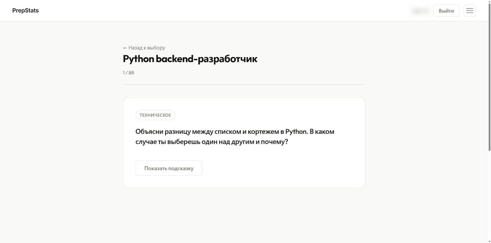
Тренировка на карточках
05 · Резюме
Резюме с помощью AI
Пользователь указывает целевую должность и проходит опрос из семи шагов: контакты, о себе, опыт, образование, навыки, языки, курсы. AI переписывает ответы в аккуратный текст резюме, сохраняя факты. Любой раздел можно поправить вручную, готовое резюме скачивается в PDF и DOCX.
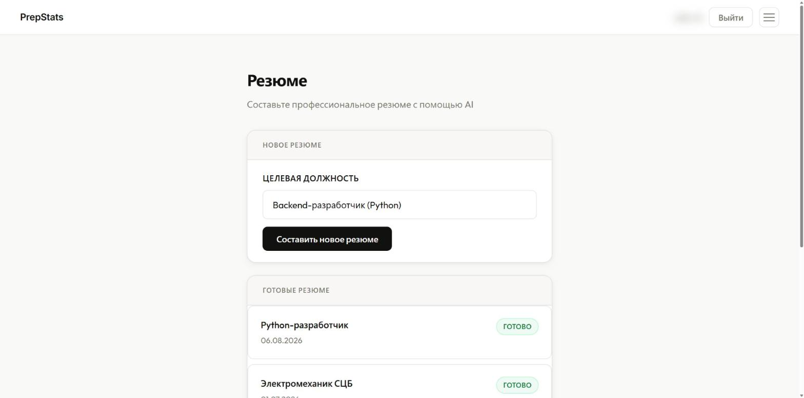
Создание резюме под должность
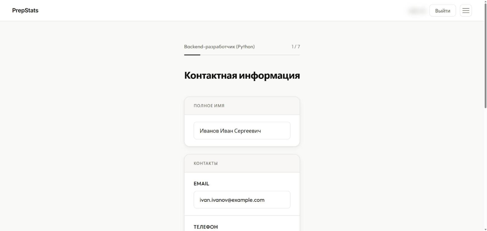
Опрос: контакты
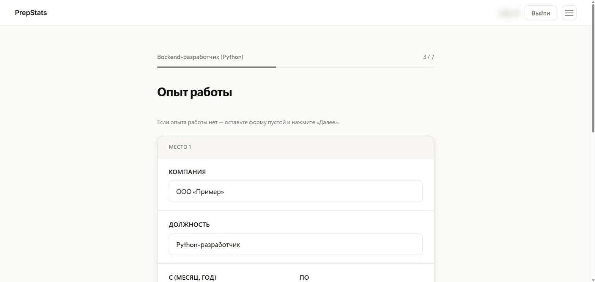
Опрос: опыт работы
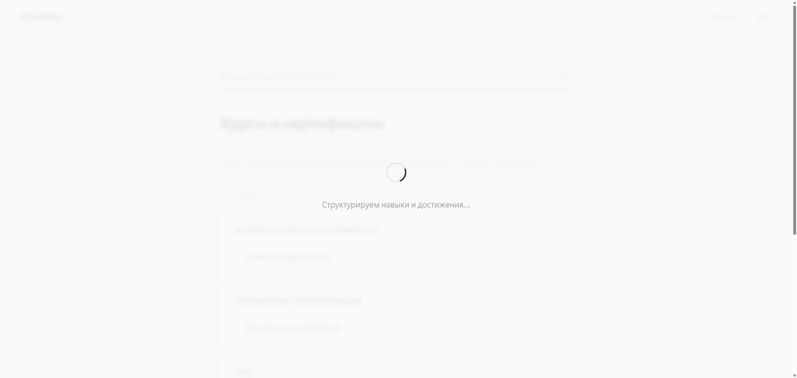
AI составляет резюме
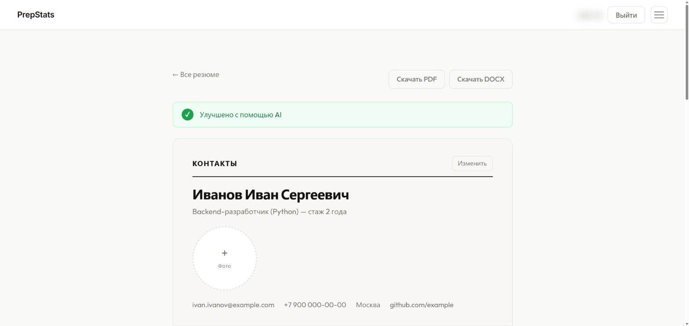
Готовое резюме, экспорт в PDF и DOCX
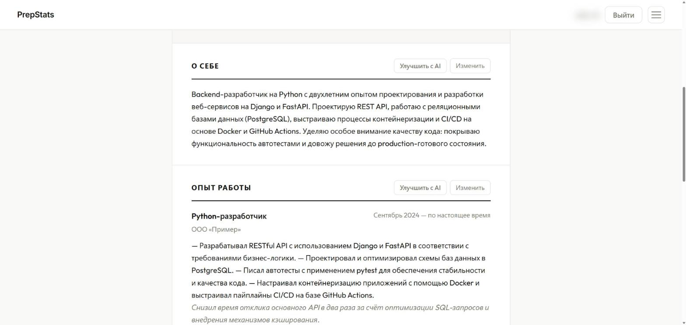
Разделы, улучшенные AI
06 · Подписки
Тарифы и оплата через ЮKassa
Три тарифа различаются дневными лимитами на интервью, резюме и обновления AI-анализа. Оплата проходит на стороне ЮKassa, подписка включается автоматически после подтверждения платежа и сама отключается по истечении срока. О покупке и об окончании подписки пользователь получает письмо.
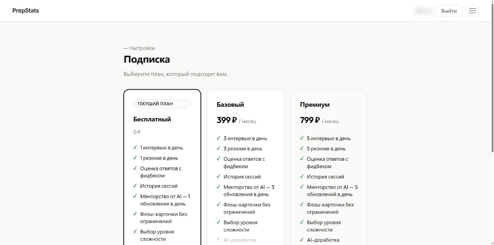
Тарифы и подписка